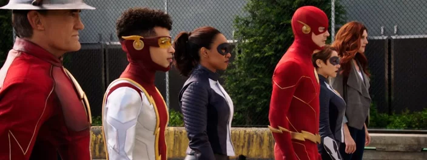
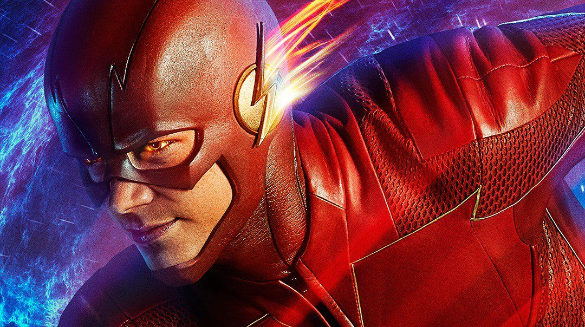
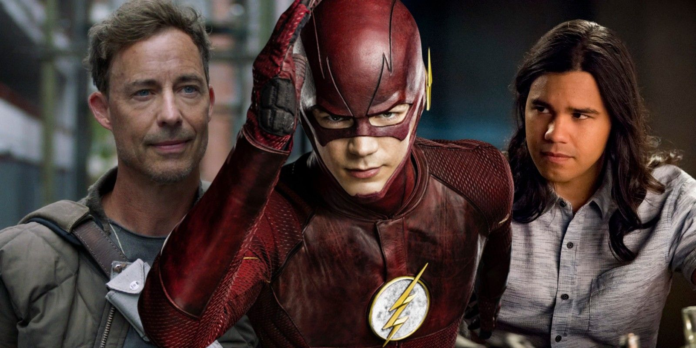
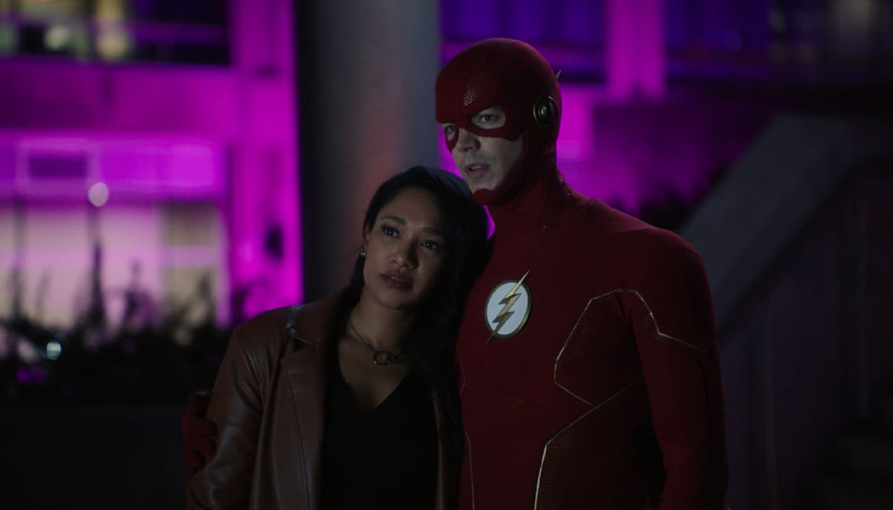

<!DOCTYPE html>
<html lang="pt-br">
<head>
    <meta charset="UTF-8">
    <meta http-equiv="X-UA-Compatible" content="IE=edge">
    <meta name="viewport" content="width=device-width, initial-scale=1.0, maximum-scale=1.0">
    <link href="./css/style.css" rel="stylesheet">
    <title>Seriados</title>
</head>
</html>
    <body>
        <nav class="nav">
            <h2>The Flash</h2>
            <ul>
                <li><a href="./index.html">Home</a></li>
                <li><a href="./filmes.html">Filmes</a></li>
                <li><a href="./quadrinhos.html">Quadrinhos</a></li>
                <li class="selected"><a href="./seriados.html">Seriados</a></li>
                <li><a href="./contato.html">Contato</a></li>
            </ul>        
        </nav><!--nav-->

        
       <nav class="nav-mobile">
      
        <h2></h2>
     <ul>
         <li class="selected"><a href="index.html">Home</a></li>
         <li><a href="./filmes.html">Filmes</a></li>
         <li><a href="./quadrinhos.html">Quadrinhos</a></li>
         <li><a href="./seriados.html">Seriados</a></li>
         <li><a href="./contato.html">Contato</a></li>
     </ul>    
    </nav>


        <section class="container_box">
               <div class="serie">
                
      
            </div><!--serie-->

            <div class="text">
                <p> <b>The Flash</b> é uma série norte-americana transmitida pelo canal The CW baseada no personagem da DC Comics. A série acompanha o cientista Barry Allen, que adquire super velocidade através de um estranho acidente e se torna conhecido como o Homem Mais Rápido Vivo. <br><br> Consagrado como super-herói da cidade, The Flash passa a enfrentar vilões que surgiram da mesma explosão, chamados de metahumanos, além de outros inimigos e velocistas que aparecem desta e de outras Terras, vindos do passado e também do futuro. <br><br>
                    No Brasil, a série é transmitida pelo canal pago Warner Channel e Netflix. <br><br>
                 No elenco estão, Grant Gustin (Glee), Candice Patton, Danielle Panabaker (Sexta-feira 13), Carlos Valdes, Tom Cavanagh (Scrubs) e Jesse L. Martin (Law & Order).</p></p> 
            </div>

        <div class="sobre">
               <h2>Sobre</h2>
               <p><b>Status:</b> Série Renovada</p>
               <p><b>Gênero:</b> Ação/ Aventura</p>
               <p><b>Origem:</b> The CW (EUA)</p>
               <p><b>Onde Assistir:</b> Netflix, Warnner Channel</p>
               <p><b>Temporadas:</b> 6</p>
               <p><b>Episódios:</b> 136</p>
               <p><b>Duração média por Episódio:</b> 42 minutos</p>
               
               
               
        </div><!--sobre-->

        </section><!--container_box-->

        <!--footer-->
        <div class="footer"> 
                <div class="copy">&copy; Todos os direitos resevados</div>
                <div class="dev"> Lucas WebSites </div>
        </div><!--footer-->

        <script src=" https://code.jquery.com/jquery-3.6.0.min.js"></script>
        <script>
            $('.nav-mobile h2').click(function(){
                $('.nav-mobile ul').slideToggle();
            });
        </script>
        
    </body>
    </html>